РАЗРАБОТКА ИНФОРМАЦИОННОЙ
СИСТЕМЫ ДЛЯ НЕБОЛЬШОГО ТОРГОВОГО ПАВИЛЬОНА
Теги: справочник, документ, форма, команда, критерий отбора, схема компоновки данных
ЗАДАНИЕ
Заказчик просит разработать информационную систему для небольшого торгового павильона.
1. Необходимо регистрировать заказ товаров. В момент телефонного звонка оператор вводит в систему следующие данные:
– ФИО заказчика;
– номер телефона;
– перечень заказанных товаров.
2. Нужно регистрировать выдачу товаров. Оператор выделяет один или несколько заказов из списка и нажимает на кнопку «Создать выдачу заказов». Должна открыться новая форма с перечнем выделенных заказов, которую оператор может отредактировать и сохранить.
3. Также необходимо сформировать отчет, который выведет список всех документов, в которых был отмечен тот или иной товар, выбранный пользователем.
q Создать новую информационную базу.
q Открыть информационную базу в режиме «Конфигуратор».
q Открыть окно конфигурации.
Подробнее о том, как это сделать, смотрите в Лабораторной работе № 2 (стр. 17).
Исходя из условия, нам необходимо хранить информацию о товарах и заказчиках. Для этой цели в «1С:Предприятии» существует объект конфигурации справочник.
Определение
Справочник – это объект конфигурации, который хранит справочную информацию, например, перечень товаров или список сотрудников (более подробно про справочники можно прочитать здесь: https://v8.1c.ru/platforma/spravochniki/).
Добавим справочник «Заказчики».
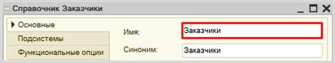
Добавим справочник «Товары».
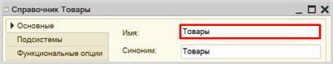
Запустим информационную базу в режиме «1С:Предприятие» и добавим несколько элементов в каждый справочник.
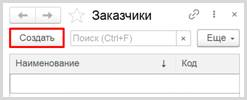
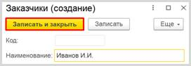
Обратите внимание, что поля «Код» и «Наименование» система сгенерировала самостоятельно при добавлении нового справочника. Эти поля являются стандартными реквизитами. Стандартные реквизиты платформа создает автоматически, исходя из свойств конкретного объекта конфигурации. Поле «Код» заполнять не нужно, система сделает это автоматически. Поле «Наименование» является обязательным для заполнения.
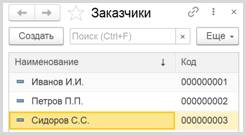
Аналогично добавим несколько элементов в справочник «Товары».
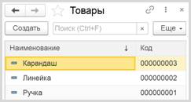
Таким образом, мы организовали хранение информации о заказчиках и товарах.
Далее нам нужно реализовать в системе формирование заказов. Для этого воспользуемся объектом конфигурации документ.
Определение
Документ – это объект конфигурации, хранящий информацию о каких-либо событиях, произошедших в «жизни» предприятия. Например, с помощью документа можно зарегистрировать (то есть сохранить данные документа для последующей обработки) продажу товаров или начисление зарплаты (подробнее про документы можно прочитать здесь: https://v8.1c.ru/platforma/dokumenty/).
Добавим документ «Заказ».
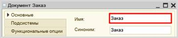
Если запустить режим «1С:Предприятие», то форма документа будет выглядеть следующим образом:
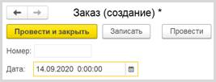
q Чтобы подготовить документ для использования в будущем, следует его записать;
q Чтобы отметить документ как совершенный – провести.
Полей документа «Номер» и «Дата» для решения поставленной задачи недостаточно. Заказчику необходимо фиксировать множество различных данных при формировании заказа. Для настройки структуры документа переходим на вкладку «Данные».
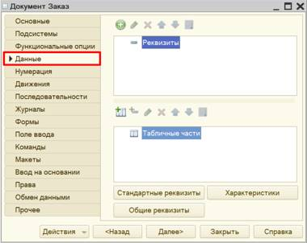
В документе обязательно нужно фиксировать имя заказчика.
Для этого нужно добавить реквизит «Заказчик» с типом «СправочникСсылка.Заказчики». Таким образом, пользователь сможет выбирать только элементы из справочника «Заказчики».
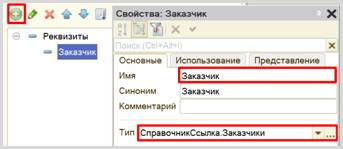
Кроме того, в документе нужно хранить перечень товаров, которые заказчик хочет заказать.
Конечно, мы можем создать несколько отдельных реквизитов. Но может получиться такая ситуация, когда заказчик решит заказать большее количество товаров, чем добавлено реквизитов. Идея с добавлением реквизитов нам не подходит. Поэтому перечень товаров логично разместить в табличной части справочника.
Добавим новую табличную часть «СписокТоваров».
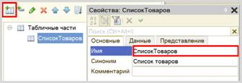
Если сейчас посмотреть на табличную часть документа в режиме «1С:Предприятие», то сама табличная часть будет совершенно пуста, в нее нельзя внести какие-либо данные. Необходимо добавить колонки для табличной части. Для этого нужно воспользоваться реквизитами табличной части.
Добавим реквизит табличной части «Товар» с типом «СправочникСсылка.Товары».
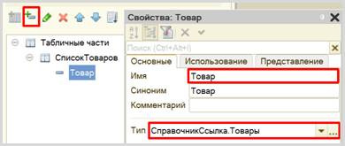
Добавим также количество для каждого выбранного в заказ товара. Аналогично создайте новый реквизит табличной части «Количество» с типом «Число».
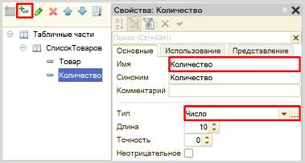
Перейдем в режим «1С:Предприятие» и зафиксируем несколько заказов.
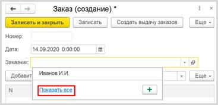
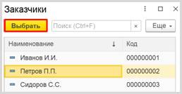
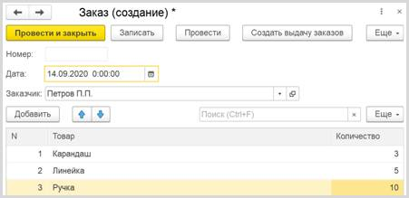
Далее следует приступить к созданию возможности фиксировать выдачу заказов.
Добавим еще один документ – «ВыдачаЗаказов».
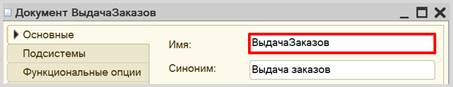
Для настройки структуры документа переходим на вкладку «Данные».
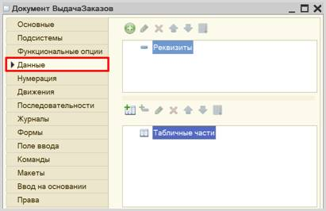
В документе нужно хранить перечень заказов, которые нужно выдать. Добавим табличную часть «СписокЗаказов».
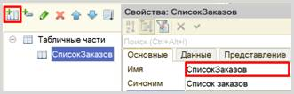
В табличной части следует добавить реквизит «Заказ» с типом «ДокументСсылка.Заказы».
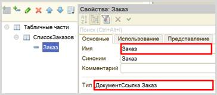
Теперь нужно создать форму документа. Это необходимо сделать для того, чтобы изменить стандартное поведение формы, описав свой алгоритм действий.
Переходим на вкладку «Формы» и создадим новую форму документа.
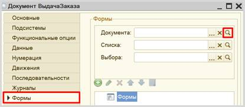
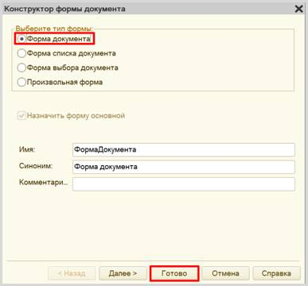
Открывается конструктор формы.
Здесь можно изменить расположение элементов, их отображение, размер и т. д. Наша задача заключается в том, чтобы изменить стандартное поведение данной формы. Для этого в списке элементов находим форму, а в палитре свойств – событие «ПриСозданииНаСервере» на вкладке «События».
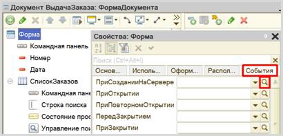
Откроется модуль формы с шаблоном процедуры. То, что будет написано в данной процедуре будет выполняться платформой вместо ее стандартных настроек при создании нового документа на сервере.
Нужно написать следующее:
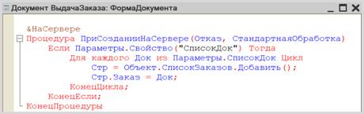
При создании нового документа будет отслеживаться свойство «СписокДок». Если такое свойство присутствует, тогда данная процедура заполнит табличную часть документа заказами.
Внимание!
Обязательно проверьте модуль на наличие синтаксических ошибок.
Для этого нажмите на кнопку «Проверка модуля». Должно открыться окно «Служебные сообщения». Если синтаксических ошибок не обнаружено, то в данном окне появится надпись «Синтаксических ошибок не обнаружено».
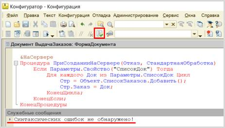
Если же появится ошибка, то нужно внимательно ее изучить и щелкнуть по ней дважды правой кнопкой мыши. Курсор автоматически переместится на строку, в которой была обнаружена ошибка. Исправьте ошибку.
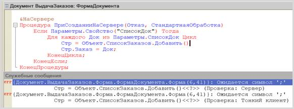
Исправляйте ошибки до тех пор, пока не появится сообщение об отсутствии ошибок.
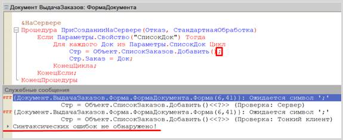
На этом работа с документом «ВыдачаЗаказов» завершена.
Откроем окно редактирования документа «Заказ».
Нам нужно, чтобы оператор смог выбрать один или несколько заказов из списка заказов, нажать на кнопку «Создать выдачу заказов». Система должна сформировать документ «ВыдачаЗаказов» с перечнем всех выбранных оператором заказов. Чтобы создать такую кнопку и запустить формирование нового документа необходимо создать команду.
Перейдем на вкладку «Команды» и добавим новую команду.
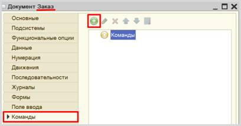
Должен открыться модуль команды. В первую очередь, дадим команде имя «СоздатьВыдачуЗаказов» в палитре свойств. Название модуля команды должно измениться.
Установите свойство «Группа»
в значение «Командная панель формы.Важное». Таким образом, мы определили место,
где созданная команда будет отображена на форме.
Установите свойство «Тип параметра команды» в значение «ДокументСсылка.Заказ». Команда становится параметризуемой, и будет доступна везде, где будет использоваться параметр команды, то есть наш документ «Заказ».
Установите свойство «Режим использования параметра» в значение «Множественный». Это значит, что оператор сможет выбрать сразу несколько документов и запустить данную команду.
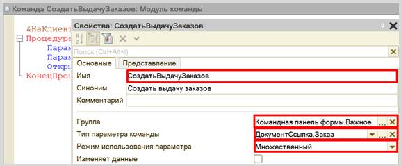
Теперь, когда все настройки установлены, переключимся на модуль команды. Нам нужно открыть форму документа «ВыдачаЗаказов» и передать туда параметр.
Определение
Параметр команды — это набор документов, которые выделит пользователь.
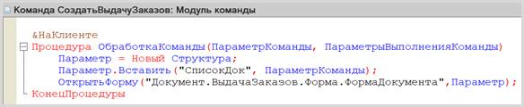
Данная команда будет делать следующее: оператор выделяет один или несколько заказов из списка и нажимает на кнопку «Создать выдачу заказов». Откроется форма создания нового документа «ВыдачаЗаказов» с заполненной табличной частью. Причем в табличной части будут находиться выделенные оператором заказы.
Внимание!
Не забудьте проверить модуль на наличие синтаксических ошибок!
Обязательно вернитесь к окну редактирования документа «Заказ» на вкладку «Команды» и установите галочку «Использовать стандартные команды».
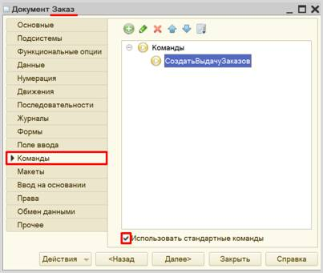
Проверим работоспособность команды в режиме «1С:Предприятие». Попробуем создать выдачу заказа.
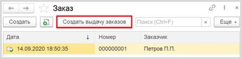
Открывается форма документа «ВыдачаЗаказа», в табличной части которого находится выбранный заказ.
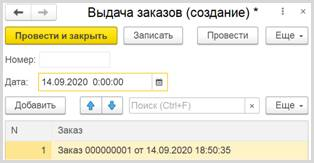
Обратите внимание, что форма документа заказа может быть открыта прямо из табличной части. Это поможет оператору при выдаче быстро проверить содержимое заказа.
После редактирования форму можно провести и закрыть.
Последнее требование нашего заказчика – поиск того или иного товара среди всех документов «Заказ».
Для выполнения данной задачи будем использовать отчет. В отчете пользователь сможет выбрать интересующий его товар и получить список всех документов, содержащих данный товар в табличной части. Документы должны быть доступны для быстрого просмотра.
Для начала нужно создать критерий отбора. Он предназначен для описания некоторого правила выборки информации из объектных данных различных типов.
Добавим новый критерий отбора «ПоТоварам».
ПОДСКАЗКА
Критерии отбора находятся во вкладке «Общие» дерева конфигурации.
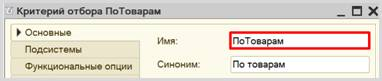
Перейдем на вкладку «Данные» и укажем тип значения для данного отбора. Очевидно, если мы хотим делать отбор по элементам справочника «Товары», то именно такого типа данные нам и нужны в качестве критерия отбора.
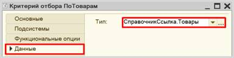
Определим состав критерия отбора на вкладке «Состав». Таким образом, мы определим, где именно система будет искать тот или иной товар в табличной части документа «Заказ».
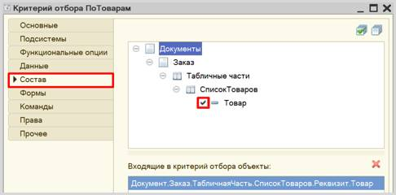
Теперь, когда критерий отбора создан, можно создать отчет.
Отчет – это такой объект конфигурации, который формирует данные в понятном для пользователя виде, например, в виде таблицы или диаграммы (подробнее про отчеты можно прочитать здесь: https://v8.1c.ru/platforma/otchet/).
Добавим новый отчет «ПоискПоТоварам».
Откроем схему компоновки данных.
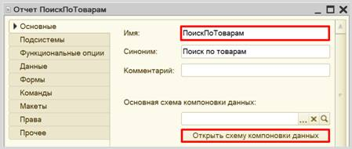
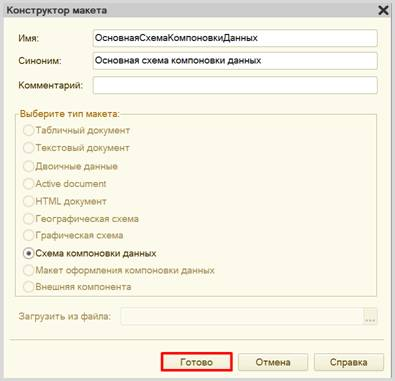
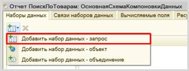
Для составления запроса воспользуемся конструктором запроса.
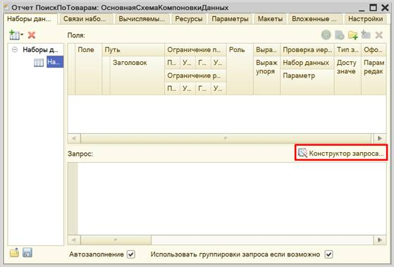
Открывается конструктор запроса. Эта вкладка имеет три части:
q Часть слева отображает все объекты конфигурации, имеющиеся в нашей базе данных. Нужно выбрать лишь те объекты, из которых мы хотим получать данные.
q Посередине находятся таблицы – это выбранные нами объекты, откуда мы хотим получать данные для конкретного отчета.
q Справа поля – это те значения (поля), которые мы хотим увидеть в отчете.
Чтобы перенести
данные из одного окна в другое, просто перетащите нужные поля с помощью
мыши либо воспользуйтесь стрелочками, расположенными между окнами.
В результате данное
окно должно быть заполнено следующим образом:
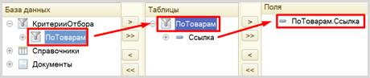
Переходим на вкладку «Объединения/Псевдонимы». Здесь мы можем изменить
название реквизита, чтобы пользователю было понятнее, что именно он будет
наблюдать в отчете.
Изменим имя поля «Ссылка» на «Документ».
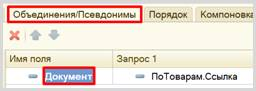
Закрываем конструктор запроса,
нажав на кнопку «ОК». Получившийся запрос должен выглядеть следующим образом:
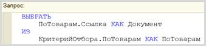
Переходим на вкладку «Настройки» для формирования внешнего вида отчета.
Воспользуемся конструктором настроек отчета.
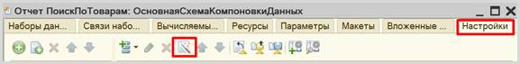
Создадим отчет в виде списка.
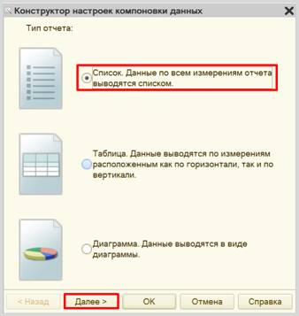
Вынесем реквизит «Документ» для отображения в отчете.
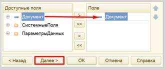
Группировку устанавливать не будем. Переходим к следующему пункту.
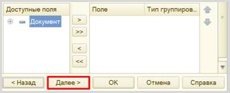
Установим сортировку документов по возрастанию.
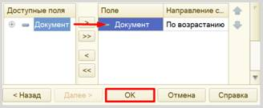
Далее в нижней части экрана вкладки
«Настройки» найдем вкладку «Параметры» и вызовем «Свойства элемента пользовательских
настроек» для параметра «Значение».
Данный параметр система формирует
автоматически при работе с критериями отбора.
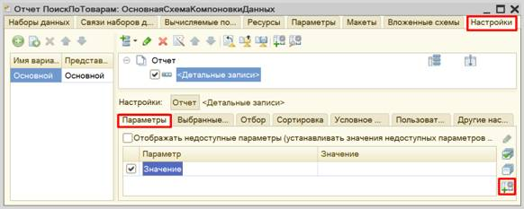
В открывшемся окне проставим галочку, чтобы данный параметр стал
доступен пользователю для изменения. Также дадим этому параметру псевдоним
«Товар».
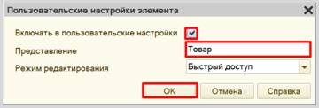
Теперь можно перейти в режим «1С:Предприятие» и проверить работоспособность отчета.
Вы можете убедиться в правильности работы отчета. Двойным щелчком откройте любой из документов и найдите в перечне товаров «Линейку».
Поставленная задача решена.